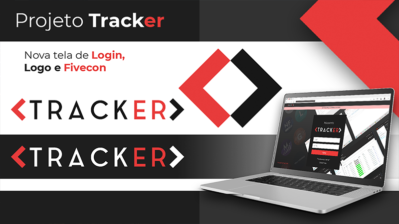

-

identidade visual
Meu processo de criação de identidades visuais e logotipos incorpora habilidades em design,
psicologia e experiência do usuário para alcançar resultados notáveis. Através da utilização
estratégica de cores, formas e tipografia, busco estabelecer uma conexão emocional com o
público-alvo e transmitir os valores fundamentais da marca. Foco na facilidade de
reconhecimento, garantindo designs impactantes, memoráveis e altamente eficazes.
-
peças gráficas
Deixe sua mensagem brilhar com peças gráficas impactantes. Minha dedicação em entender seus objetivos e público resulta em designs que cativam e comunicam com clareza. O uso de técnicas visuais e psicológicas garante que suas peças sejam verdadeiramente memoráveis.
-
produtos
Converto ideias em produtos excepcionais, unindo design, psicologia do consumidor e técnicas inovadoras. Cada projeto é resultado de uma extensa pesquisa de mercado e análise de tendências, resultando em soluções únicas e funcionais. Minha abordagem combina aperfeiçoamento estético com foco na experiência do usuário, garantindo resultados de qualidade e impacto.
-
social media
Impulsione sua presença nas redes sociais com conteúdo envolvente e estratégico. Meu foco na experiência do usuário e conhecimento em publicidade digital garantem campanhas que atraem e retêm seguidores. Com uma abordagem criativa e resultados mensuráveis, sua marca ganhará destaque no mundo digital.